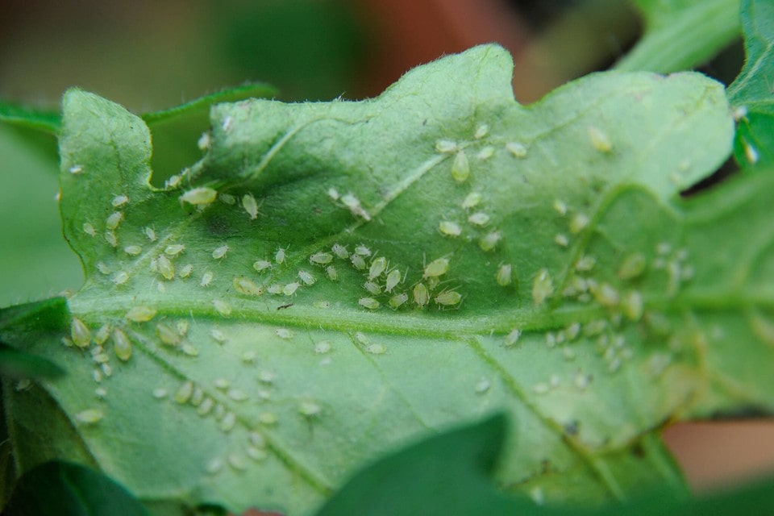

Aphids | Plant Enemies
Hold on. I need to find a piece of wood, because what I am about to say is going to require a good knocking. I have never had an issue with aphids (knock. on wood). I try to discourage myself from saying such things out loud because I genuinely don’t want to “learn” about them through experience. BUT knowledge is power, and as plant lovers, we need to know what to watch for.

Appearance
- Small, 1/16 – 1/8 inch long.
- Pear-shaped soft-bodies with visible legs and antennae.
- Typically wingless, although winged adults capable of flight may be present sometimes.
Plant Damage
- They feed on plant sap.
- Leaves can yellow, and plants can become stunted and distorted.
- Honeydew on leaves that can become black with sooty mold.
Detection
- Watch for discolored leaves.
- Watch for honeydew (a shiny, sticky substance).
- They tend to cluster on stems just below flower buds, newly opening leaf buds, tips of plants, and the undersides of leaves.
- The canopy of leaves, table, and floor may be sticky.
Solution
- Washing.
- Physical removal: cotton swab dipped in alcohol; remove using a forceful spray of water.
- Pesticides: pyrethrins, insecticidal soap, neem oil, plant oil extracts, imidacloprid.
© AmieSue.com